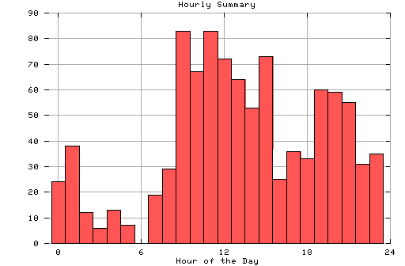

HTTP Server Hourly Summary
Covers: 09/25/95 to 10/08/95 (14 days).
All dates are in local time.
midnite: 24 : # 1:00 am: 38 : ## 2:00 am: 12 : # 3:00 am: 6 : 4:00 am: 13 : # 5:00 am: 7 : 6:00 am: 0 : 7:00 am: 19 : # 8:00 am: 29 : # 9:00 am: 83 : #### 10:00 am: 67 : ### 11:00 am: 83 : #### noon: 72 : #### 1:00 pm: 64 : ### 2:00 pm: 53 : ### 3:00 pm: 73 : #### 4:00 pm: 25 : # 5:00 pm: 36 : ## 6:00 pm: 33 : ## 7:00 pm: 60 : ### 8:00 pm: 59 : ### 9:00 pm: 55 : ### 10:00 pm: 31 : ## 11:00 pm: 35 : ##